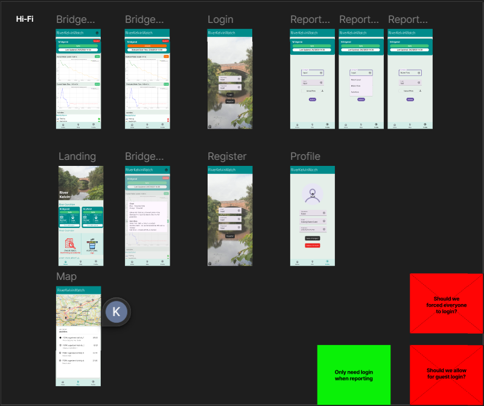
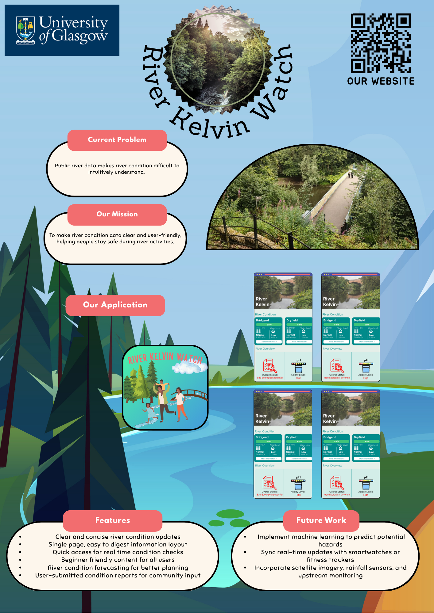

22/7/2025
In the morning, we attended a lecture on the importance of asking the right questions. From there our team decided to sit together and brainstorm some questions, mainly focusing on clarifying the questions that we had about the questions statement.
Some of the questions we had are:
- Who is the target audience, who is going to use
- What does river condition mean?
- Are there any other data sources that we can use, other than SEPA as it seems limited.
- What are the main concerns that we should be looking out for?
In the afternoon, we met our project partner, Sally from Friends of River Kelvin. The partner meeting have helped us in clarifying and understanding the whole project. Additionally, we got a chance to learn something new regarding the river through the discussion with Sally. We were quite glad that we were able to use what we learnt in class in action and was able to drill down the problem statement to better understand and fine-tune the requirements.
During the meeting, we also gave out suggestions of possible solutions, which was an easy-to-use mobile application. While the partner was receptive to this idea, she also suggested we look into Information Display Systems that are used on beaches to tell the public basic information.
After the meeting, we decided to first consolidate our findings from the meeting into a list in order to prevent any one person from being out of the loop and ended the day there.
23/7/2025
After lecture, we came together and list out all possible ideas during a group discussion where we came with:
- Mobile Application
- Information Display System
- QR Code + Website
The following are images of the brainstorming:


After the brainstorming, we decided to do some research on the different ideas that we had and drawing it out, we dicuss regarding the feasibility of each idea and also the cost of making the product.
Based on what we see, the idea that cost the most would be the Information Display System (need setup and constant power source), followed by Website (need hosting) and lastly the mobile app.
24/7/2025
We first created a storyboard to better understand how the app should work, using online resources we were able to create a general process flow to better understand and see how the product should work.

After that, we created a low fidelity prototype on figma to visualize the app's possible layout and functionality.
The features are:
- General Safety Information
- Current Water Level
- Charts that show both historical data and also prediction
- Current Water Flow
- Latest River Pollution Data
Even though we had created a low fidelity prototype, we knew that there was still a lot of work to be done before it could be considered a viable product, as such we spend the rest of the day refining the prototype, removing while also adding to hopefully meet the requirements set by the partner
We also conducted our first round of groundworking, where we visited the River Kelvin after school to learn more about the place


We also found out that there is a few warning poster that is already in place, but is often hidden and dirty, with some words fading.


We also found information board, such as a bird information and also notice board, but each of them seems unused and not updated often.


.jpg)

From the groundworking, we were able to see that there is a need for a better way to inform the public about the river condition, as the current information is not easily noticeable and also does not seem that updated.
25/7/2025
We had a lecture regarding prototyping this morning, as such we were able to use what we learn to finetune our low fidelity prototype. At first we focus on making the feature, but we now know that we should make a bad product, to understand the pain points better to better create a new prototype.
From here, we tested our prototypes within the group, knowing that the prototype is mainly for testing our ideas, we kept testing to find issues with our initial prototype.
We also created a list of issues that we found with the prototype, such as:
- Confusing charts
- Hard to navigate
- Difficulty in understanding the rationale behind one of the features (taking photo)
From here, we planned out on what can be used and what must be fixed in our high fidelity. However, what we focus more on about was the pitch video as it was due to this day.
Throughout the week, we had already created a powerpoint presentation and so while some of us were planning out the high fidelity prototype, others were working on the presentation and scripts.
Pitch Video
28/07/2025
We began the day by first confirming the features that we wanted to have in our product and then began the creation of our high fidelity prototype. We similar used figma to design and plan out the navigation of the app, through out the development, we faced some issues as we did not really understand how to use the more advanced features of figma. However, luckily the internet is there to help us and we were able to create a initial high fidelity prototype.
.jpg)
After the creation, we spotted some issue with the navigation and also how it should start up, from there we began further discussion to get everyone on the same page and also to vote on what should be done
We also found out that the pollution chart might be a little too confusing from people to understand, as such we began creating another home screen to try do an A/B testing
The current issue that we have now is that we need client feedback to better improve our prototypes.
29/07/2025
Today we received the feedback for our first pitch video, it was mostly positive, however the issue came with the understanding of the problem statement and also the project requirements, where we did not show enough regarding the forecasting and prediction of river kelvin. As such we decided to include them into our high fidelity prototype, making it more obvious for users to use and predict future conditions.
We also have started the initial draft of our poster, which is currently a work in progress, where we plan to focus more on selling the product than explaining what it does.
.jpg)
30/07/2025
We continue redesigning the app, mainly changing how the forecasting works. After doing some internal test run, we found out that the readability of the forecast was not that good, as such we tested different version and settle for one that just overrides the entire page to the forecast frame.
Our group have come to the understanding that no matter what there is still rooms for improvement and also that we should keep refining the prototype until it is more usable and when we are satisfied with it.
We were also able to create a second draft of the poster and also created a logo for our mobile application.
.jpg)
31/07/2025
Today, we conducted our second and possibly last partner meeting. The main focus for this meeting was to showcase our chosen high-fidelity prototype and gather final feedback from our partners.
We were given a few feedbacks on what we should look out for:
- We need to think about ways to reach out to people, ask why would they use this app?
- It would be nice if there are QR codes to link to both Friends of River Kelvin's Instagram and website.
- We should consider adding a news section to keep users updated.
We also discussed about the methods they uses for pollution checking and how it should be integrates with our app.

After the meeting, we asked some of our classmate to try testing the app to gather further feedback
- The label are confusing, there should be a way for us to know what each of them means
- Some of the charts were clipping through
- Talking about the community tabs, there should be a way to click into it as there is no way for them to scan the QR as it is a mobile app


01/08/2025
Today's is our submission day for the pitch video. Therefore, we spent the day finalizing the pitch video slides and recording the voiceover.
Pitch Video
Additionally, we modified the high-fidelity prototypes based on the feedback received from partners and classmates.
The main changes are:
- Added a help button to explain the chart
- Added a news section to keep users updated with Friends of River Kelvin's activities
- Added an alternative way to select the date and time for forecasting the river conditions
- Added QR codes (clickable on mobile) to link to Friends of River Kelvin's Instagram and website
With extra time, we worked on improving the poster by adding a nice vector based background.
04/08/2025
Today, we were unable to meet in school as planned due to a weather alert, which led to the cancellation of on-campus activities. Despite this unexpected disruption, our group adapted by conducting the discussion virtually from our accommodation. We focused primarily on finalizing the poster design for the project.
Although we encountered some initial challenges in coordinating the discussion and sharing ideas effectively in a remote setting, we managed to overcome them by staying flexible and maintaining clear communication. Through collaboration and compromise, we successfully refined and completed the final version of our poster. This experience highlighted the importance of adaptability and teamwork, especially when working under unexpected limitations.
Shown below are the two new designs we've worked on. We all agrees that using the real River Kelvin image (instead of vector) looks nicer. The differences between the two is that the latter ones uses a tinted background. Our team will discuss in-depth tomorrow on which design is more appropriate for our target users.
05/08/2025
Today, we met up in school and conducted the final meeting and design discussion for the poster. We mainly focused on the content and also the sizing of the font. While we did not change much of the design, we were able to discuss and solve some of the possible issues that we each have think might be. After that we conduct one last vote and all of us think that the poster is okay and ready to be submitted for printing.
06/08/2025
For the next few days, we discussed and decided to focus on our website, where we focus mainly on the content and also the design of the website. We mainly focus on trying to match the color scheme of the website to match that of Friends of River Kelvin and also river in general.
We made the website using:
- HTML
- CSS
- Bootstrap
As for the content, we used previous student's website as template and design it with the goal of recording our design process and project roadmap.
07/08/2025
Today we focused mainly on the content of the website, making sure what we added correctly reflected on what we did for that day and also uploading images to support what we did.
We also made sure to add the pitch video and also the poster to the website, so that it can be easily accessible.
Currently, the issues we faced is just the interactivity of the site, as we are only allowed static website and our group wanted to keep the design and website coding as minimal as possible.
08/08/2025
Today we finalized the website and rechecked all the details before submission. We are prepping for the final poster presentation which will occur later this afternoon. Currently all of us are having high hopes that our project and project pitch would be accepted by the professors and markers.
Overall Reflection (Eassy)
This project was a great learning experience for our team. We faced challenges in understanding the problem statement and requirements, but through brainstorming and discussions, we were able to clarify our goals. The iterative process of prototyping helped us refine our ideas and create a more user-friendly product.
Overall, we are proud of the final product and the skills we developed throughout this project. We learned the importance of gathering feedback from both partners and peers to improve our design. Most importantly, we were able to apply the concepts and skills we learned throughout the OIP into real-life projects.
We are dismayed that we were not able to produce a working prototype in this three weeks time frame. However, we are confident that the design and features we developed will be valuable for future iterations of the project. We hope that our work will contribute to improving river safety and awareness not just for River Kelvin, but the entire community.
Finally, we would like to thank our project partner, Friends of River Kelvin, for their support and guidance throughout this project. Their insights and feedback were invaluable in shaping our design and ensuring that we met the needs of the community.
Read more on our individual reflection:
Lee Wei Kwan Bernard
I really enjoyed working on the design phase. One challenge was managing time, but I learned a lot from the process.
Loh Qingkai Benjamin
As a Year 2 Computing Science student, I’ve worked on several projects, but this one stood out—similar to a previous module, PSD, where we had to interact with a customer. It made me think more deeply about real user needs. Even though it was just a frontend design, we had to consider how people interact with river safety data in a clear and accessible way.
Working with my teammates was smooth. We split the work based on our strengths and continuously refined our ideas together. The pitch videos gave me a chance to reflect on what I learned in class and to showcase our progress in a short 5-minute format especially when it came to communicating our design clearly. By the second video, we improved a lot. Thanks to the feedback from our marker, we presented our ideas more confidently and clearly.
Creating the poster helped bring everything together visually and allowed us to reflect on the full design journey. This project reminded me that even simple interfaces can make a real difference when built with purpose and with the user in mind.
Tan Jia Jun Bryan
This project was an interesting experience. Although not the first time we (the year 2 CS students) were exposed to an external party during our curriculum (some if not most of us would have already had this experience from the 'Team Project' module), being exposed to an external party in an unfamiliar environment was a novel experience.
I personally faced various challenges along the way such a lack of familiarity with the local (Glasgow/UK) context, the time constraints of the project, needing time to settle into a different environment, falling sick .etc and through it all I am glad to have come out more enriched. In the highly globalized world of today, experiences like these will be sure to come in handy - especially in a metropolitan environment like the one back in Singapore.
While there are various aspects we could look to improve on, I am glad that we were able to come together as a group and give it our all to successfully complete the assignments. Working with my group mates, the faculty at UofG and our project partner was a pleasure and I would like to expressed my heartfelt thanks to everyone involved.
Kek Zhi Wei
While this is not the first project that we did, that involves real life clients and solving real life problems/project (PSD/TP). Even so, it was a good learning experience as this was a completely different setting as compared to Singapore. Initially, it was difficult to adjust throughout the OIP as it was completely different as to how teaching was back in Singapore.
Regardless, I had a enjoyable time working with my teammates and completing this project. I learnt the importance's of effective communication and collaboration. Even though most of us have mostly the same idea, each of us have different ways of designing and also how to implement, this shows how each of us had different mental model of the same idea. Through communications and collaboration, we were able to iron out each of our mental model and into a shared mental model, getting everyone on the same page.
Overall, this project was quite an good experience, we got to built on the topics we learnt back in Singapore and also learn new things such as Mental Model and even the "Mom's Test". It was also nice to be able to use what we have learnt in class into practice throughout the project.
Koh Wei Jie Justin
Summary Prototyping and wireframing were really fun for me. Next time I want to get involved earlier in coding.
Leong Jing Feng
Summary Prototyping and wireframing were really fun for me. Next time I want to get involved earlier in coding.